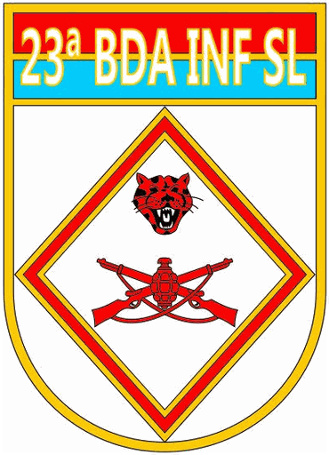
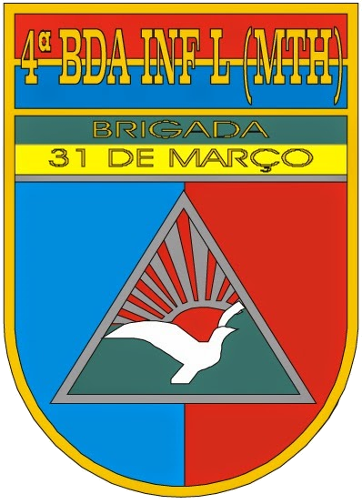
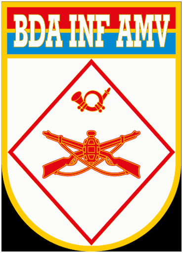
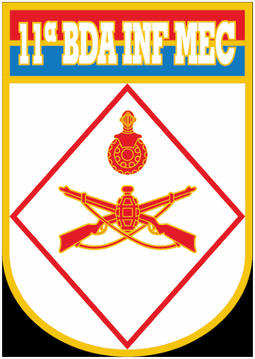
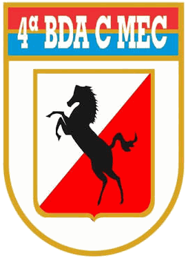
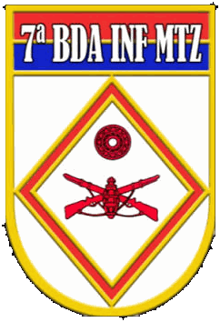

Estrutura terrestre
Divisões e brigadas
Navegação da divisão para a brigada e suas unidades.

Grandes unidades

1ª DE
1ª Divisão de Exército
Tropas leves.

Brigada de Infantaria de Selva
Selva e fronteiras
3 unidades · Acessar brigada →
Brigada de Infantaria de Montanha
Montanha e terreno elevado
1 unidade · Acessar brigada →Brigada de Infantaria Paraquedista
Paraquedistas e precursores
2 unidades · Acessar brigada →
Brigada de Infantaria Leve (Aeromóvel)
Tropas leves aeromóveis
1 unidade · Acessar brigada →
3ª DE
3ª Divisão de Exército
Tropas médias e motorizadas.

Brigada de Infantaria Mecanizada
Infantaria mecanizada e caatinga
2 unidades · Acessar brigada →
Brigada de Cavalaria Mecanizada
Cavalaria e Pantanal
2 unidades · Acessar brigada →
Brigada de Infantaria Motorizada
Infantaria, logística e artilharia
3 unidades · Acessar brigada →
5ª DE
5ª Divisão de Exército
Tropas blindadas.
Organizações fora das brigadas
Unidades de apoio direto
- BPE — Batalhão de Polícia do Exército
- B Com — Batalhão de Comunicações
- 1º RCG — Regimento de Cavalaria de Guardas
Centros de instrução e inteligência
- CIE — Centro de Inteligência do Exército
- CIGS — Centro de Instrução de Guerra na Selva
- CIOU — Centro de Instrução de Operações Urbanas
- CIOpC — Centro de Instrução e Operações na Caatinga
- CIOpEsp — Centro de Instrução de Operações Especiais
- CIOpMth — Centro de Instrução de Operações em Montanha
- CIOPan — Centro de Instrução de Operações no Pantanal
- CIBld — Centro de Instrução de Blindados
- CI Pqdt GPB — Centro de Instrução Paraquedista General Penha Brasil